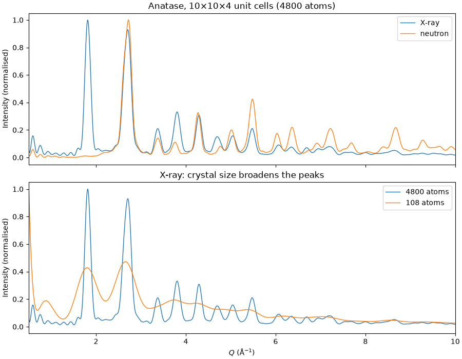

Note
Go to the end to download the full example code.
Powder patterns of anatase#
Read a CIF file, let DISCUS build a supercell, calculate X-ray and neutron powder patterns with the Debye equation, and plot them with matplotlib.
The structure is anatase (TiO2), COD entry 1010942
(python/examples/anatase.cif).
To run it yourself, from the repository root:
DIFFUSE_PYTHON_PATH=build/python PYTHONPATH=python python3 python/examples/powder_demo.py
Read the structure#
A CIF file holds the asymmetric unit. DISCUS applies the space group (I41/amd) and builds 10 x 10 x 4 unit cells.
crystal = dc.read_structure(CIF, supercell=(10, 10, 4))
print(crystal)
Crystal('anatase.cif', supercell=(10, 10, 4), natoms=4800, lattice=(3.73, 3.73, 9.37, 90, 90, 90))
Calculate powder patterns#
The results are NumPy arrays (q and intensity), so any plotting or
analysis library can use them.
1901 points from Q = 0.5 to 10.0 Å⁻¹
A much smaller crystal of the same structure shows how the crystal size broadens the peaks.
small = dc.read_structure(CIF, supercell=(3, 3, 1))
xray_small = dc.powder(small, qmin=0.5, qmax=10, dq=0.005, radiation="xray")
Plot#
X-rays see mostly titanium; neutrons see oxygen much more strongly, so the relative peak heights change.
fig, (top, bottom) = plt.subplots(2, 1, figsize=(9, 7), sharex=True,
constrained_layout=True)
top.plot(xray.q, xray.intensity / xray.intensity.max(), lw=1, label="X-ray")
top.plot(neutron.q, neutron.intensity / neutron.intensity.max(), lw=1, label="neutron")
top.set_title(f"Anatase, 10×10×4 unit cells ({crystal.natoms} atoms)")
top.set_ylabel("Intensity (normalised)")
top.legend()
for p, label in ((xray, f"{crystal.natoms} atoms"), (xray_small, f"{small.natoms} atoms")):
bottom.plot(p.q, p.intensity / p.intensity.max(), lw=1, label=label)
bottom.set_title("X-ray: crystal size broadens the peaks")
bottom.set_xlabel(r"$Q$ (Å$^{-1}$)")
bottom.set_ylabel("Intensity (normalised)")
bottom.set_xlim(xray.q[0], xray.q[-1])
bottom.legend()
plt.show()

Total running time of the script: (0 minutes 0.222 seconds)